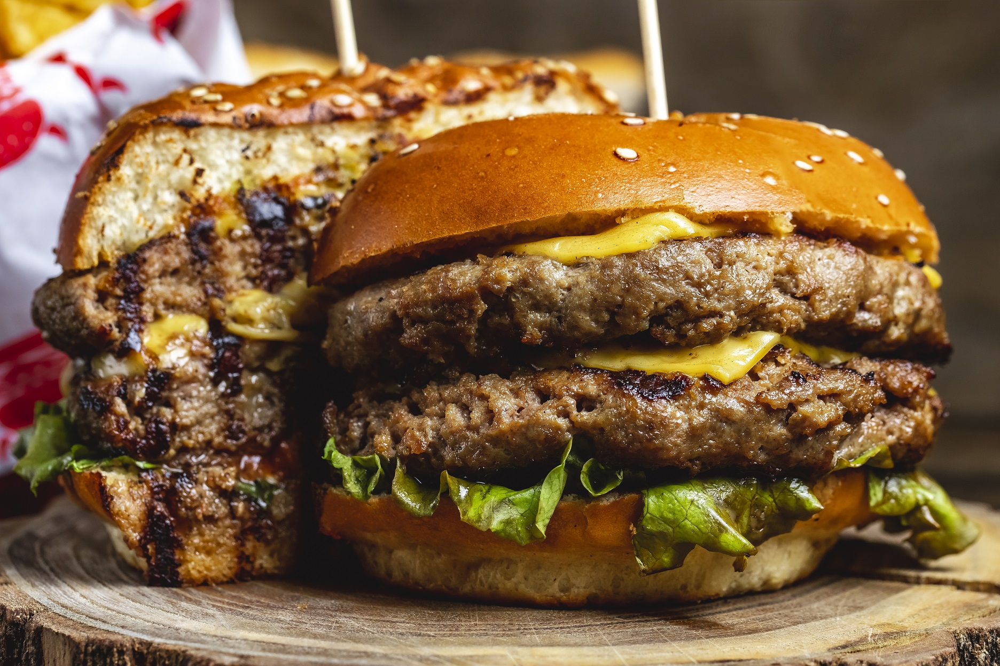

Smash Burgers

On the Menu
This smash burger is absolutely delicious, it will overwhelm your tastebuds in all the right ways.
It only takes about 10 minutes to cook and will leave you satisfied for hours.
Grab some ground beef, bacon, classic american cheese, throw it in a cast-iron skillet then finish with our secret sauce
The Ingredients
- 24oz ground beef(80/20)
- Sliced american cheese (6-8 slices)
- Dill pickles
- Salt and Pepper
- Secret sauce
- Sesame burger bun
- Any additional toppings you like
The Cooking Process
- Add mayo, ketchup, dijon mustard and relish to a bowl and mix. This is the secret sauce
- Portion out the 24oz ground beef into eight 3oz balls, and set aside.
- Get your cast-iron skillet hot af, press the 3oz balls directly on to the skillet
- After about 30-seconds, smash the balls with a spatula or cast-iron burger press. Season with salt+pepper
- After about 4-5 minutes/when the bottom is crispy, flip the burgers.
- Top each pattie with a slice of the cheese, and cook until fully melted.
- Once cooked, stack the burgers however you please
- Grab your buns (toast them if you like) and add the secret sauce to the bottom one
- Next stack your burgers on top of the bottom bun, then some pickles and finally go heavy on the secret sauce
- ENJOY
Notes
Burger is best enjoyed with a side of crispy fries, powdered in cajun spice.
Back to the Recipes